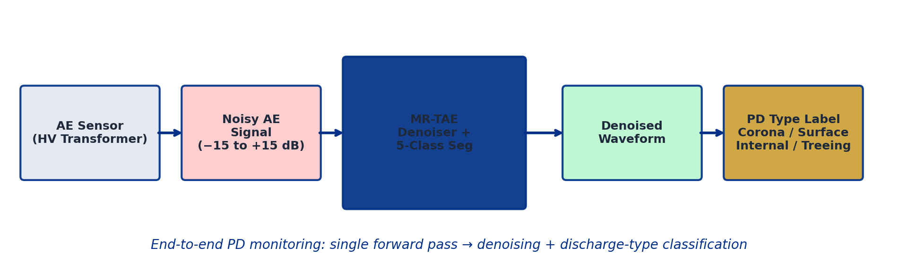
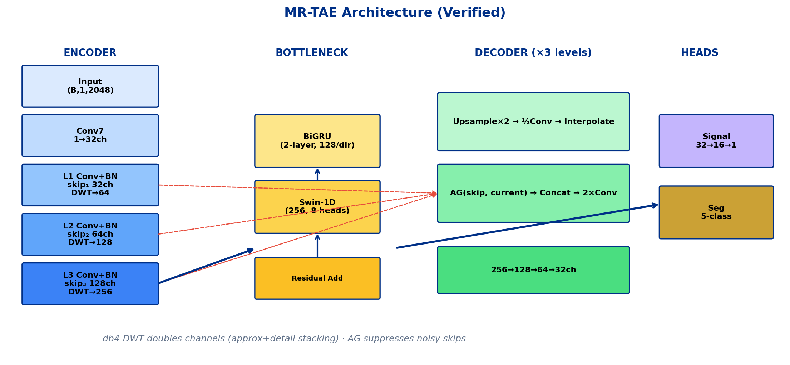
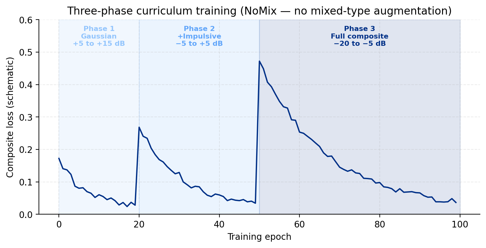
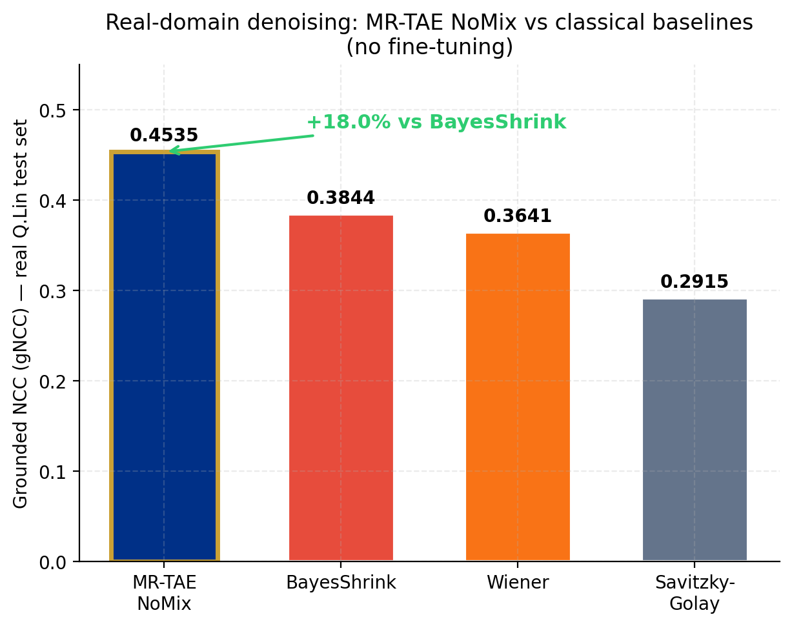
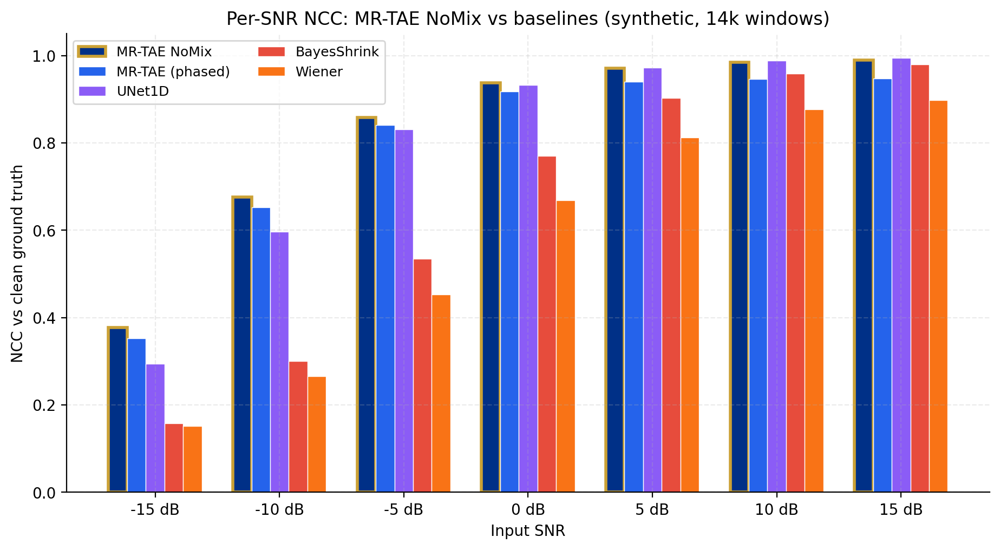
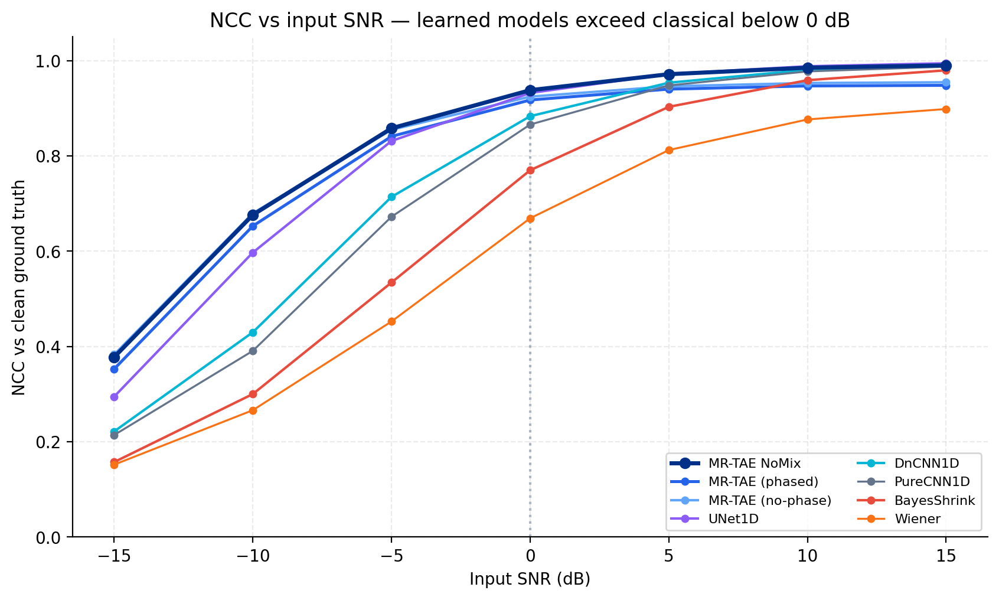
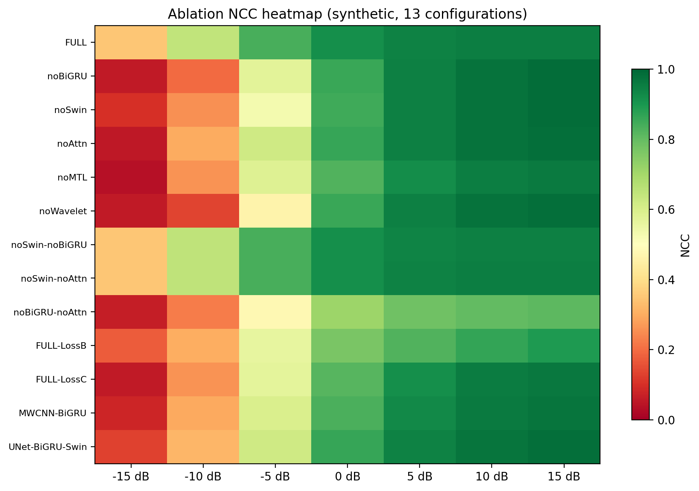
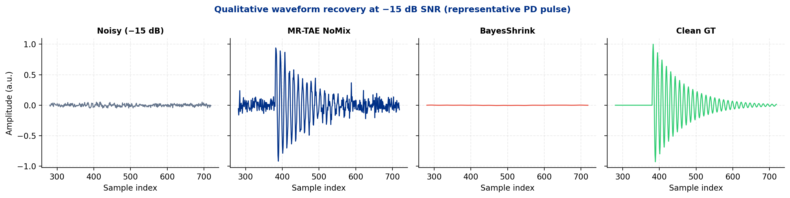
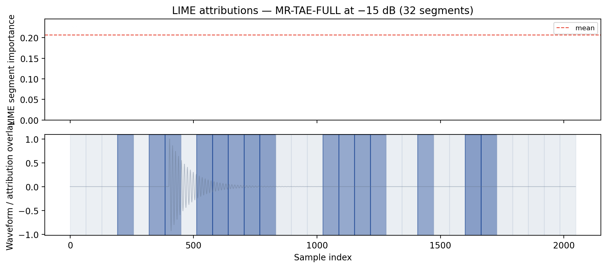
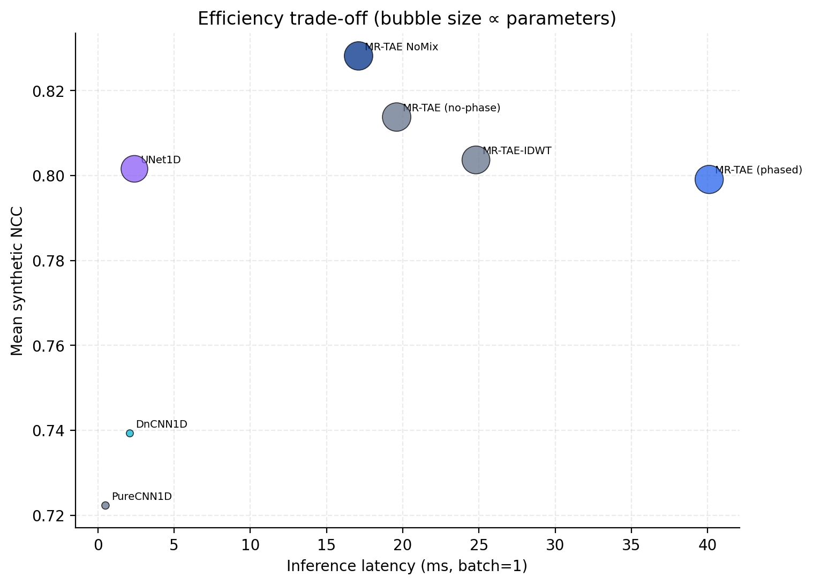

Partial discharge (PD) is the earliest detectable sign of insulation breakdown in high-voltage (HV) transformers. On-site acoustic-emission (AE) sensors capture diagnostic pulses but are overwhelmed by broadband noise at SNR as low as −15 dB.
Classical denoisers (wavelet thresholding, Wiener filter, Savitzky-Golay) share three fatal limitations:

| Component | Source |
|---|---|
| AWGN | Thermal / electronic |
| Broadband structural | Magnetostrictive core hum |
| Powerline harmonics | 50 Hz + 3rd harmonic |
| Narrowband 80 kHz | Comms / fan resonance |
| Bernoulli-Gaussian | Switching transients |
Target SNR: −15 to +15 dB in 5 dB steps · 14,000 frozen test windows
Single unified multi-task autoencoder — denoising + discharge-type segmentation in one inference pass.

Input (B,1,2048) → Input Proj Conv7 1→32ch (B,32,2048) → Conv L1 + skip₁ (B,32,2048) → DWT → (B,64,1025) → Conv L2 + skip₂ (B,64,1025) → DWT → (B,128,513) → Conv L3 + skip₃ (B,128,513) → DWT → (B,256,257)
db4-DWT stacks approx + detail sub-bands → channels ×2, length ÷2.
BiGRU (2-layer, 128/dir) → Swin-1D (256 embed, 8 heads, window=32) → residual add.
AG: Out = σ(ψ(ReLU(Wg·g + Wx·x))) × x — filters noisy skips before concat. noAttn ablation: gNCC collapses 0.4366 → 0.1014.
Dual heads: Signal (32→16→1) + Segmentation (5-class: BG · Corona · Surface · Internal · Treeing)
| Split | Content | Size |
|---|---|---|
| Synthetic train | 6 DOP archetypes (A–F) | 80k |
| Synthetic test | 7 SNR × 2000 windows | 14,000 |
| Real Q.Lin test | 4 gaps, 7 SNR levels | 35,000 |
| Phase | Noise | SNR | Epochs |
|---|---|---|---|
| 1 | Gaussian | +5 to +15 dB | 20 |
| 2 | +Impulsive | −5 to +5 dB | 30 |
| 3 | Full composite | −20 to −5 dB | 50 |
NoMix = phased curriculum without mixed-type augmentation — purer discharge-type signatures.

L = w₁·L_Charb + w₂·L_Focal + w₃·L_GenDice with learned homoscedastic weighting (Kendall 2018).
AdamW (lr=3×10⁻⁴), cosine annealing, grad clip=1.0, AMP.
| Metric | NoMix | BayesShrink | Δ |
|---|---|---|---|
| NCC (mean) | 0.8282 | 0.6578 | +25.9% |
| NCC @ −15 dB | 0.3777 | 0.1575 | 2.39× |
| SNR improvement | 9.64 dB | 2.73 dB | +6.91 dB |
| Dice (5-class) | 0.9192 | N/A | — |
| gNCC (real) | 0.4535 | 0.3844 | +17.9% |



| Removed | NCC drop | Insight |
|---|---|---|
| Wavelet | −0.169 | Lossless freq. decomposition |
| MTL seg | −0.151 | Morphology preservation |
| BiGRU | −0.143 | Temporal dynamics |
| Swin | −0.136 | Long-range context |
| Attn gate | −0.122 | Skip noise suppression |




WGAN-GP augmentation · Noise2Void self-supervised adaptation · INT8 quantisation for edge deployment · Multi-sensor PD localisation